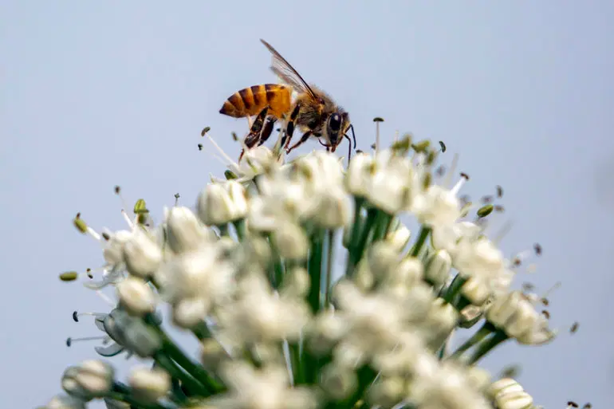

24. april 2021
Danski naučnici naučili su pčele, koje imaju dobar njuh, da otkrivaju uzorke zaražene COVID-19, a to bi postignuće moglo skratiti dobijanje rezultata testiranja na korona virus na nekoliko sekundi. Kako bi istrenirali pčele, naučnici u bioveterinarskom istraživačkom laboratoriju na Univerzitetu Wageningen nagrađivali su te insekte zaslađenom vodom nakon što bi im pokazali uzorke zaražene korona virusom. Kada bi im pokazali nezaražene uzorke, pčele ne bi dobile ništa, prenosi Hina, pozivajući se na Reuters. Voditelj projekta Wim van der Poel, profesor virologije koji je bio dio projekta, rekao je kako su uzete “normalne medonosne pčele” koje bi, kada su se navikle na takav sistem, isplazile jezik da bi dobile nagradu, što je postao pokazatelj da je uzorak zaražen.
